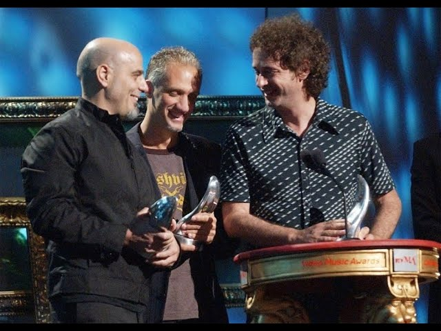

Premios y reconocimientos a Soda
A lo largo de su trayectoria, Soda Stereo se consolidó como una de las bandas más influyentes del rock en español, recibiendo múltiples premios y reconocimientos a nivel nacional e internacional. Su innovación musical, impacto cultural y éxito comercial les valieron distinciones como premios MTV, Grammy Latino y numerosos homenajes que destacan su legado en la música latinoamericana.
Premios y legado
A lo largo de su trayectoria, Soda Stereo se consolidó como una de las bandas más influyentes del rock en español. El grupo formado por Gustavo Cerati, Zeta Bosio y Charly Alberti recibió diversos premios y reconocimientos que reflejan su impacto en la música latinoamericana y en la cultura popular.
Premios y reconocimientos
- MTV Video Music Awards (1996) : Ganaron el premio International Viewer's Choice: MTV Latin America por el videoclip “Ella usó mi cabeza como un revólver”.
- MTV Video Music Awards (1990) : Fueron nominados en la misma categoría por el videoclip “En la ciudad de la furia”.
- Premio Leyenda de MTV Latinoamérica (2002) : Reconocimiento especial otorgado por su enorme influencia en la música latinoamericana.
- Premios Konex (1995) : Recibieron el Konex de Platino como la mejor banda de rock argentino de la década y el Diploma al Mérito por su trayectoria.
- Premios MTV Latinoamérica (2008) : Ganaron el premio a Mejor Gira por su tour de reunión “Me Verás Volver”.
- Latin Grammy – Premio a la Excelencia Musical (2023) : La Academia Latina de la Grabación otorgó este reconocimiento a Soda Stereo por su contribución histórica a la música latina.
Legado
El legado de Soda Stereo es considerado fundamental en la historia del rock en español. Durante su carrera vendieron millones de discos en todo el mundo y ayudaron a popularizar el rock latino en países como Argentina, México, Chile y Colombia. Sus canciones, entre ellas “De música ligera”, “Persiana americana” y “En la ciudad de la furia”, siguen siendo referentes del género y continúan influyendo a nuevas generaciones de artistas.
Hoy en día, Soda Stereo es recordada como una de las bandas más importantes de América Latina y su música continúa siendo escuchada por millones de fans en todo el mundo.
